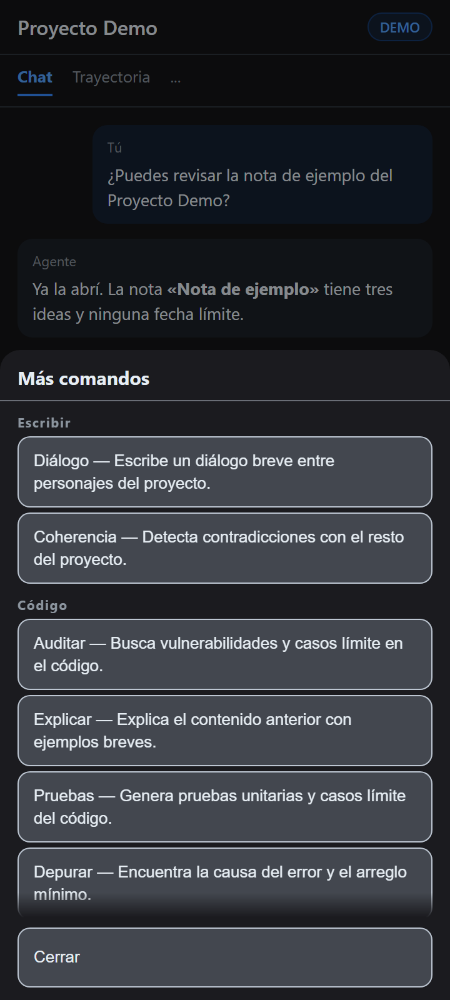

DeepSeek Harness on your phone, inside your private network
DSH Mobile Companion is an Android app plus a local bridge that let you control the agent on your computer from your phone: no cloud, no account, nothing exposed to the Internet. The phone talks to your PC over ZeroTier or Tailscale while the agent keeps running where it belongs.

What it is and what it is not
It is a remote control for DeepSeek Harness: open your PC chat from the phone, insert quick commands, show code keys, send notes and get turn notifications.
It is not an on-device AI model, a cloud service or an official DeepSeek client. It does not store your API key and it cannot work with the computer turned off.
How it works
- You run the bridge on the computer: a dependency-free Node process that talks to Harness and serves the phone only on loopback and your VPN interface.
- The phone joins the same private network and opens the app.
- You approve the device once from the local computer panel; the app remembers the device cookie.
- From then on you control chat, commands and notes from the phone.
Features
Full chat
The real Harness composer, adapted to phone screens and landscape typing.
Quick commands
Catalog per profile (writing or code) with per-command switches in Settings.
Code keys
Tab, Esc, braces, brackets, parentheses and symbols without switching keyboards.
Phone notes
Write offline and send the note to the computer when it comes back.
No dependencies
Node bridge without npm packages and an APK without AndroidX or Kotlin.
Verified updates
The APK is checked by SHA-256 and installed with the same release certificate.
Honest comparison
| Option | Upside | Limit |
|---|---|---|
| DSH Mobile Companion | Chat and commands on the phone, no cloud, inside your VPN | Android only, one active PC, needs VPN and bridge |
| Harness in the phone browser | Zero install | No quick commands or code keys, awkward in landscape |
| Remote desktop | You see the whole PC | Heavy, poor touch use and a larger attack surface |
Install
- Download the APK from GitHub Releases and install it.
- On the PC, start the bridge and the local panel. Note the address:
http://PRIVATE-IP:57420. - Join the phone to the same private VPN.
- Open the app, add the PC address and tap "Request access".
- Approve the device on the computer panel. The app signs in automatically.
Screenshots



FAQ
What is DSH Mobile Companion?
An Android app plus a local bridge connecting your phone to DeepSeek Harness through your private network. Not a cloud client, and it never stores your API key.
Do I need an account or subscription?
No accounts and no intermediate servers. The software is free under BUSL-1.1.
Is my computer exposed to the Internet?
No. The bridge listens only on loopback and your private VPN interface, with no port forwarding.
Does it work with the computer turned off?
Not for the agent. You can still write notes and send them later.
Which Android versions are supported?
Android 8.0 (API 26) or newer, without background Google services.
Is it official?
No: an independent client by Tinta y Nodos. It requires DeepSeek Harness on your PC.
Is it secure?
HTTP inside your private VPN, encrypted by the tunnel; SHA-256 verified APK, local device approval, kill switch and key rotation.
Is there an iOS or desktop version?
Series 5 is Android only; other clients are separate lines, not available yet.
Where do I report bugs or vulnerabilities?
Bugs through GitHub Issues with the bug template; vulnerabilities privately per SECURITY.md.